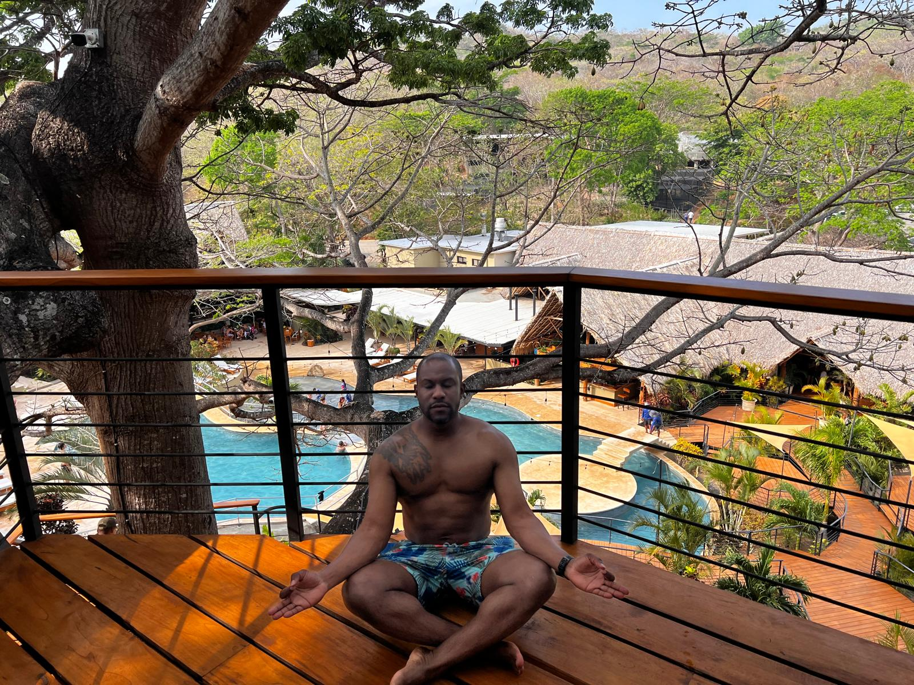

Thinking About Making Nicaragua Home?
The founder's personal property journey and the questions worth asking first before you buy, build or invest near the coast.

My Story With Property
I didn't buy on day one. I explored Nicaragua and Central America for over 10 years, returning every 3–6 months across seasons, surf cycles and local economic shifts.
Over that decade, I built relationships with local families, expat homeowners, trusted attorneys and municipal offices. When I eventually purchased property near the Pacific coast, it wasn't a rushed investment play—it felt like the next natural step in a long, respectful relationship with the place.
"Ask, Trust, but Verify."
Nicaragua offers remarkable real estate opportunities, but protecting your capital requires patient, systematic due diligence. Never skip steps, never rely on verbal promises, and always work with independent, proven professionals.
Four Crucial Steps Before Buying
The core legal and practical safeguards that will save you time, international flights and costly missteps.
Property Management From Abroad
Looking after a home while dividing time between Florida and Nicaragua requires reliable, communicative local caretakers.
Tropical climates, rainy season humidity, power backup systems and garden maintenance demand weekly attention. Having trusted property managers or experienced local housekeepers who communicate transparently over WhatsApp makes remote ownership smooth and worry-free.
Keep expectations realistic: maintenance rhythms in Central America work on relationships, not corporate dashboards. Treat people well and they will look after your property like their own.

Zion Connections
Over a decade of traveling and property ownership has helped me identify trusted local resources across Nicaragua.
An introduction is not an endorsement or guarantee. Always interview and conduct your own due diligence.
Independent Professionals & Evolving Realities
ZIONNICA introduces independent professionals only. Real estate laws, title registries, municipal taxes and municipal building permits in Nicaragua evolve over time. Always verify cadastral maps, titles and contracts directly with licensed legal counsel before transferring funds.
Have a Question About Buying?
Whether you are considering a beach lot, a colonial courtyard home, or simply want to understand the steps.